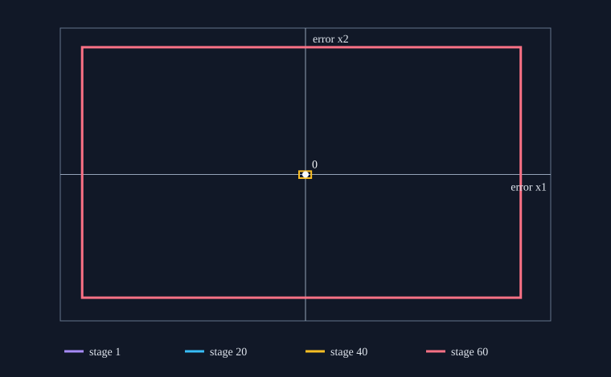

For every 60-stage control history with each value in [-0.3, 0.3], the candidate nonlinear and linear recurrences starting at (1, 2) have the same-control terminal error inside [-11.384829795848264, 10.972861225716151] × [-7.575433251975735, 7.822240492249602].
The resulting two-sided reachable-set Hausdorff distance in the infinity norm is at most 11.384829795848264, for the control-only candidate systems. This coarse enclosure does not establish either set's inclusion in the other.
State dimension 2; 60 discrete stages; independent scalar controls in [-0.3, 0.3]; zero-control reference starts at (410, 300). Both compared recurrences start at (1, 2), and each matrix uses the next reference sample. The step size is pi/(18 sqrt(2)), enclosed by [0.123413414948843, 0.123413414948844]. Integer intervals at scale 10^-15 round every product outward. Pi is bounded by the alternating Machin series; sqrt(2) by integer square roots. The quadratic correction uses the nonlinear state box. Identical control terms cancel in the error recurrence.
For each admissible history, induction places both states and their difference inside the saved stage boxes. Pairing each history with itself proves the stated two-sided distance bound when no additional state constraints or pruning are imposed.

| Stage | First coordinate | Second coordinate |
|---|---|---|
| 1 | [-0.000740480489694, -0.000740480489692] | [0.000493653659794, 0.000493653659796] |
| 10 | [0.001575162066775, 0.004878609282943] | [-0.003841275395540, -0.001566444715755] |
| 20 | [0.004247389140982, 0.028021541407381] | [-0.008277939978397, 0.008505532688774] |
| 30 | [-0.075987065747366, 0.045939009664287] | [-0.026061534861122, 0.059352023317994] |
| 40 | [-0.327457330102269, 0.293114603028318] | [-0.223104496241104, 0.203293304033238] |
| 50 | [-1.621847967510981, 1.770115603768970] | [-1.179030963897447, 1.131279616505569] |
| 60 | [-11.384829795848264, 10.972861225716151] | [-7.575433251975735, 7.822240492249602] |
This is a new calculation for the hash-identified private companion candidate, SHA-256 c26fc2424fa8b3325a864d1afbc67920ba1c05665bfdf4562bed79548b60a4f1. Its source transcript and limitations are in the repository source-check note. The inspected L05 publication prints different nonlinear and linear initial states and does not supply their coordinate map. The candidate uses different reference indexing from the printed matrix. This result does not reproduce Figure 1 or Table 1, identify their driver, certify either historical construction, or bound the physical (410, 300) trajectory. No historical runtime or performance comparison is inferred.
Frozen checker source commit: 9286b5ffa9313650ceea0fc033c1410395db22fe. Report ID: issue4-volterra-7dce05b47c50c27a. Arithmetic is exact integer/rational apart from the illustrative SVG coordinates. No runtime measurements are claimed.